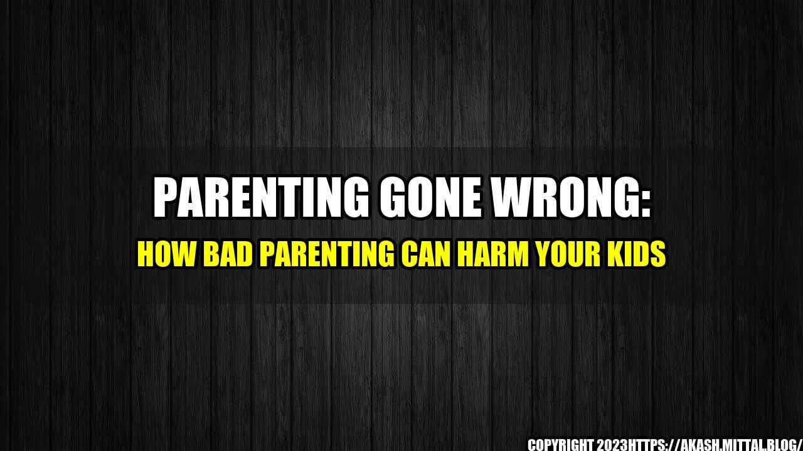

Parenting Gone Wrong: How Bad Parenting Can Harm Your Kids

When Tim was just six years old, he moved to a new town with his parents. They were both busy with their careers and hardly had any time for him. Tim often felt lonely and neglected, but whenever he tried to talk to his parents, they would dismiss him or tell him to go play by himself. As a result, Tim became increasingly withdrawn and developed a deep-seated fear of abandonment.
"Bad parenting can scar your children for life," says Dr. Lisa Damour, a clinical psychologist and author of Untangled: Guiding Teenage Girls Through the Seven Transitions into Adulthood.
Tim's story is just one of many that illustrate the risks of bad parenting. While most parents want the best for their kids, not all of them are equipped to provide the emotional support and guidance that children need to thrive. Some parents may be too busy, too stressed, or too detached to fully engage with their kids, while others may be overly critical, controlling, or neglectful. Whatever the reason, the consequences of bad parenting can be severe and long-lasting.
Bad Parenting
Although bad parenting can take many forms, some of the most common signs and effects include:
- Low self-esteem and insecurity. Children who are constantly criticized or compared unfavorably to others may develop feelings of inadequacy and inferiority. They may also struggle with social anxiety, fear of failure, and difficulty making decisions.
- Poor academic performance and lack of motivation. Children who are pushed too hard or not given enough support may struggle in school and lose interest in learning. They may also develop a negative attitude towards school and education in general.
- Anxiety and depression. Children who are exposed to chronic stress, conflict, or neglect may develop mental health issues such as anxiety and depression. They may also struggle with emotional regulation and have difficulty expressing their feelings.
- Aggressive or antisocial behavior. Children who are exposed to violence, neglect, or inconsistent discipline may exhibit disruptive or aggressive behavior towards others. They may also struggle with impulse control and have difficulty following rules.
- Lack of social skills and independence. Children who are overly sheltered or not given enough opportunities to explore the world may struggle with basic social skills such as communication, empathy, and problem-solving. They may also be overly dependent on their parents and lack the confidence to explore new experiences on their own.
While not every child will experience all of these effects, they are often indicative of underlying parenting problems that need to be addressed.
The Importance of Good Parenting
So why does good parenting matter? According to numerous studies, children who receive consistent emotional support and guidance from their parents are more likely to:
- Meet developmental milestones.
- Have better academic performance.
- Develop healthy relationships with peers and adults.
- Have better mental health and resilience.
- Build independence and self-confidence.
Good parenting doesn't necessarily mean being perfect, but rather being attuned to your child's needs and providing a safe and nurturing environment for them to grow and learn. It involves setting boundaries, being available and attentive, and providing constructive feedback and positive reinforcement.
Practical Tips for Good Parenting
If you're worried that your parenting style may be doing more harm than good, here are some practical tips to help you improve:
1. Make time for your child.
Even if you're busy with work or other obligations, try to schedule regular quality time with your child. This can be as simple as a daily check-in, a weekly outing, or a special activity that you both enjoy.
2. Use positive reinforcement.
Instead of focusing on your child's mistakes or shortcomings, try to praise their efforts and achievements. Reinforce positive behaviors with words of encouragement, affection, and recognition.
3. Set clear expectations and limits.
Children thrive on structure and consistency, so make sure you're setting clear expectations and limits for your child's behavior. Be firm but fair, and use consequences that are appropriate and constructive.
Conclusion: The Impact of Parenting on Your Child's Life
Parenting is a tough job, and no one gets it right all the time. However, by being mindful of the impact your parenting style has on your child's development, you can be better equipped to provide the support and guidance they need to thrive.
To sum up, here are three key takeaways:
- Bad parenting can have severe and long-lasting effects on your child's development and mental health. Children who are exposed to chronic stress, criticism, neglect, or conflict may struggle with self-esteem, motivation, mental health, and social skills throughout their lives.
- Good parenting involves providing consistent emotional support, boundaries, and positive reinforcement. Children who receive this type of parenting are more likely to meet developmental milestones, have better academic performance, mental health, and relationships, and build independence and self-confidence.
- By being mindful of your parenting style and using practical tips, you can help your child thrive and reach their full potential. Whether it's making time for your child, using positive reinforcement, or setting clear expectations and limits, small changes in your parenting approach can make a big difference in your child's life.
Curated by Team Akash.Mittal.Blog
Share on Twitter Share on LinkedIn